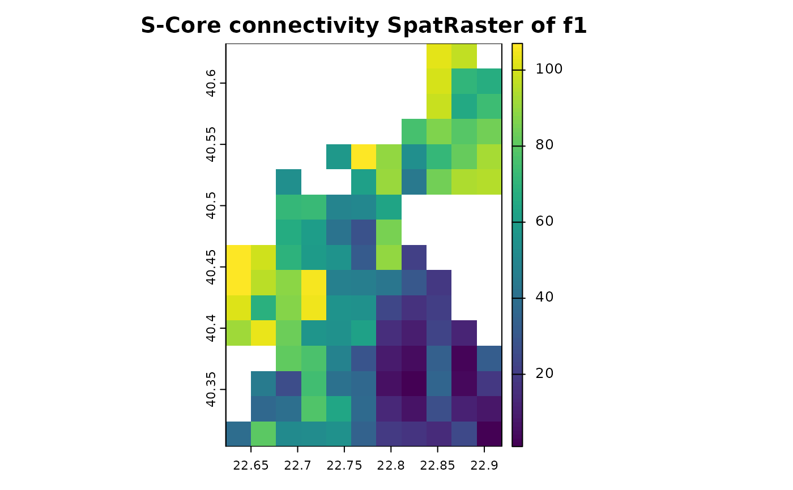

Graph Connectivity Rasters
graph_connectivity_rasters.RdGraph connectivity rasters calculation.
Arguments
- pu_raster
SpatRasterobject used as planning units for maching its non-NAcells with the coordinates described by the output of preprocess_graphs (pre_graphs). Its coordinates must correspond to the input given at get_metrics.- pre_graphs
output of get_metrics function.
Details
The graph connectivity per cell of pu_raster calculated by
preprocess_graphs is transformed to a single SpatRaster
object, where each layer corresponds to a different feature of
pre_graphs. This pu_raster is used as SpatRaster object in
terra::rasterize function and its exact non-NA values do not
matter, but only the fact that they are non-NA.
Examples
# Read connectivity files from folder and combine them
combined_edge_list <- preprocess_graphs(system.file("external", package="priorCON"),
header = FALSE, sep =";")
# Set seed for reproducibility
set.seed(42)
# Detect graph communities using the s-core algorithm
pre_graphs <- get_metrics(combined_edge_list, which_community = "s_core")
# Planning Units SpatRaster object
pu_raster <- get_cost_raster()
# Get graph connectivity rasters
f1_s_core <- graph_connectivity_rasters(pu_raster, pre_graphs)
# Plot solution raster
terra::plot(f1_s_core, main="S-Core connectivity SpatRaster of f1")
